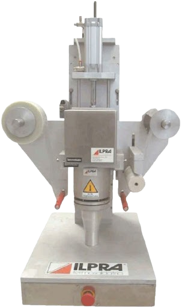
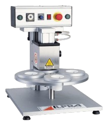

Topsipudeli pakendamine
Poolautomaatsed
ILPRA SB 500
ILPRA SEALBOX 500 on poolautomaatne topside-pudelite keevitusmasin sobiva materjaliga rullist. Masinal on pakendi tsentreerimissüsteem kvaliteetseks keevituseks. Kaks startnuppu käivitavad töötsükli. Tänu SB 500 lihtsale masinale on nüüd võimalik väikeste kuludega sulgeda nõuetekohaselt kõik pudelid ja topsid.

Kasutusel on kaks versiooni:
Mudel BASE, pakendile diameetriga kuni 120 mm.
Mudel JUMBO, pakendile diameetriga kuni 210 mm.
Kõik mudelid on valmistatud roostevabast terasest ja anodiseeritud alumiiniumist, mis võimaldavad tööd märjas keskkonnas.
Masinad on digitaalse termoregulaatoriga ja pneumaatilise kilekeevitus- ja lõikusprotsessiga.
Hooldus ja puhastamine on lihtne ja kiire.
ILPRA FS OPTI
OPTI seeria on esimene väiksema tootlikkusega ILPRA FILL SEAL masinatest. Need on lihtsad ja praktilised masinad, mis võimaldavad alustada tootmist väiksemate tellimuste täitmiseks. Töövormide vahetus on lihtne ja kestab ainult paar minutit.

Versioonid:
OPTI 300
Poolautomaatne karussell-lauaga pakkimismasin topside keevitamiseks eelstatsitud kaanega. Pöörlev neljapesaline karussell-laud võimaldab kiirendada töötsüklit ja lisada näiteks dosaatori. Keevitus on pneumaatiline ja on võimalik seadistada keevitusaega ja temperatuuri.
OPTI 100
Poolautomaatne sahtliga mudel on lihtsaim topside pakkimise viis. Keevitus on pneumaatiline ja on võimalik seadistada keevitusaega ja temperatuuri.